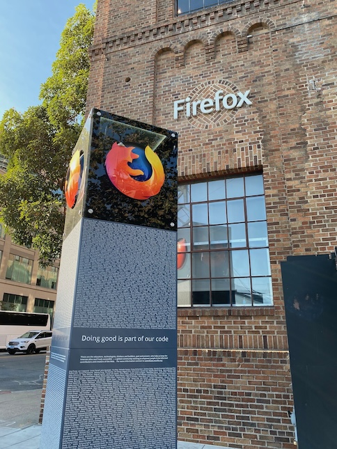

For those who don't know, I have provided countless
contributions to the Mozilla project. This is to an extent, that I
have been added to our credits page (type about:credits into Firefox!)
more than ten years ago. In February 2014, Mozilla constructed a real monument
as praise for the great people - over 4,500 names - who contributed
to the betterment of the web as part of Mozilla.
The monument was an approximately 4 meters (14 foot) tall cuboid with a Firefox logo at the top. The lower two thirds contained the names of people who have contributed to the project. The vast list of names is also a nod to the full-page Firefox advertisement that appeared in the New York Times (pictures here) and the German newspaper Frankfurter Allgemeine Zeitung (pictures here, featuring yours truly) for the release of Firefox 1.0.
The text is split up with a big headline "Doing good is part of our code" (punny!) and the following description:
These are the technologists, thinkers and builders, past and present, who help us keep the Internet alive and accessible — a global community dedicated to preserving the power and potential of the world's largest public resource.
However, with the move towards more decentralization and remote work, Mozilla moved offices and needed to deconstruct the monument. It is now in storage.
Surprisingly, I found relatively few pictures of this on the internet. So, in order to preserve a bit of internet history (and as a huge brag, of course) I am including two pictures of the monument with my name on it. See if you can find me :-)

The picture is from my colleague Vadim Makeev, thank you!